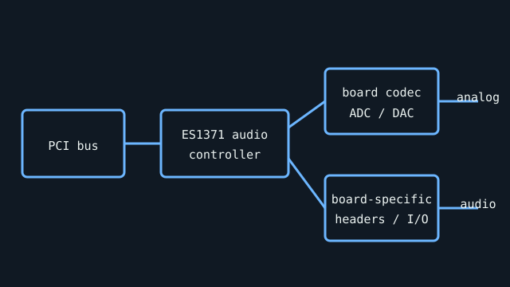

[ INDIVIDUAL COMPONENT // SOUND HARDWARE ]
Ensoniq AudioPCI (ES1371 family)
AudioPCI identifies a family of low-cost PCI cards; ES1371 is the key controller marking, not a complete board SKU. Exact codecs, analog circuitry, and bracket connectors are board-specific.

Specifications
| Product ID | Ensoniq AudioPCI family with ES1371 controller; verify chip marking and PCB vendor/model. |
|---|---|
| Bus | 32-bit PCI; conventional PCI slot required. A PCIe-only host needs an appropriate bridge and is not guaranteed to work. |
| Connectors / I/O | Typical cards expose stereo line output, line input, microphone input, and game/MIDI port; CD-audio and codec details differ by board. |
| Chipset / conversion | ES1371 PCI audio controller with host-based effects/mixing and wavetable/sample-playback support; separate external codec performs analog conversion. Do not assign a codec model without reading its package. |
| Drivers / OS | Ensoniq supplied DOS and Windows 9x drivers; subsequent Creative ownership produced later driver packages. Linux ALSA support depends on the exact PCI ID and kernel version; no current Windows support guarantee. |
| Variant compatibility | Creative-branded AudioPCI boards may use a related ES137x revision and a different codec. Confirm vendor/device/subsystem ID; similar board names do not establish identical mixer or game-port behavior. |
Service & preservation
Record the PCI IDs, chip/codec markings, and board silkscreen while the card is accessible. Preserve original DOS/Windows driver media; remove dust without scraping the controller or codec labels. On first power-up, check for shorted rails and damaged output-jack solder joints.
Primary sources
- ALSA Project — Ensoniq PCI device/driver matrixOpen driver documentation for supported Ensoniq device IDs; this documents software support rather than every board’s analog circuit.
- Internet Archive catalog — Ensoniq AudioPCI manuals and original driversArchival manufacturer documentation; match the board/device ID before using a package.